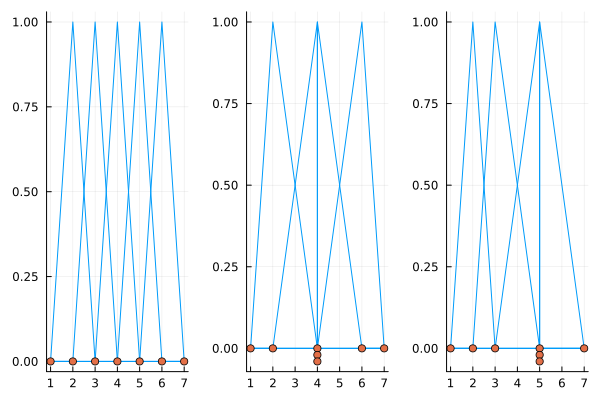

B-spline space
Setup
using BasicBSpline
using StaticArrays
using PlotsDefnition
Before defining B-spline space, we'll define polynomial space with degree $p$.
Polynomial space with degree $p$.
\[\mathcal{P}[p] =\left\{f:\mathbb{R}\to\mathbb{R}\ ;\ t\mapsto a_0+a_1t^1+\cdots+a_pt^p \ \left| \ % a_i\in \mathbb{R} \right. \right\}\]
This space $\mathcal{P}[p]$ is a $(p+1)$-dimensional linear space.
Note that $\{t\mapsto t^i\}_{0 \le i \le p}$ is a basis of $\mathcal{P}[p]$, and also the set of Bernstein polynomial $\{B_{(i,p)}\}_i$ is a basis of $\mathcal{P}[p]$.
\[\begin{aligned} B_{(i,p)}(t) &=\binom{p}{i-1}t^{i-1}(1-t)^{p-i+1} &(i=1, \dots, p+1) \end{aligned}\]
Where $\binom{p}{i-1}$ is a binomial coefficient. You can try Bernstein polynomial on desmos graphing calculator!
For given polynomial degree $p\ge 0$ and knot vector $k=(k_1,\dots,k_l)$, B-spline space $\mathcal{P}[p,k]$ is defined as follows:
\[\mathcal{P}[p,k] =\left\{f:\mathbb{R}\to\mathbb{R} \ \left| \ % \begin{gathered} \operatorname{supp}(f)\subseteq [k_1, k_l] \\ \exists \tilde{f}\in\mathcal{P}[p], f|_{[k_{i}, k_{i+1})} = \tilde{f}|_{[k_{i}, k_{i+1})} \\ \forall t \in \mathbb{R}, \exists \delta > 0, f|_{(t-\delta,t+\delta)}\in C^{p-\mathfrak{n}_k(t)} \end{gathered} \right. \right\}\]
Note that each element of the space $\mathcal{P}[p,k]$ is a piecewise polynomial.
[TODO: fig]
Degeneration
A B-spline space non-degenerate if its degree and knot vector satisfies following property:
\[\begin{aligned} k_{i}&<k_{i+p+1} & (1 \le i \le l-p-1) \end{aligned}\]
Dimensions
The B-spline space is a linear space, and if a B-spline space is non-degenerate, its dimension is calculated by:
\[\dim(\mathcal{P}[p,k])=\# k - p -1\]
julia> P1 = BSplineSpace{1}(KnotVector([1,2,3,4,5,6,7]))BSplineSpace{1, Int64, KnotVector{Int64}}(KnotVector([1, 2, 3, 4, 5, 6, 7]))julia> P2 = BSplineSpace{1}(KnotVector([1,2,4,4,4,6,7]))BSplineSpace{1, Int64, KnotVector{Int64}}(KnotVector([1, 2, 4, 4, 4, 6, 7]))julia> P3 = BSplineSpace{1}(KnotVector([1,2,3,5,5,5,7]))BSplineSpace{1, Int64, KnotVector{Int64}}(KnotVector([1, 2, 3, 5, 5, 5, 7]))julia> dim(P1), exactdim_R(P1), exactdim_I(P1)(5, 5, 5)julia> dim(P2), exactdim_R(P2), exactdim_I(P2)(5, 4, 4)julia> dim(P3), exactdim_R(P3), exactdim_I(P3)(5, 4, 3)
Visualization:
gr()
pl1 = plot(P1); plot!(pl1, knotvector(P1))
pl2 = plot(P2); plot!(pl2, knotvector(P2))
pl3 = plot(P3); plot!(pl3, knotvector(P3))
plot(pl1, pl2, pl3; layout=(1,3), legend=false)